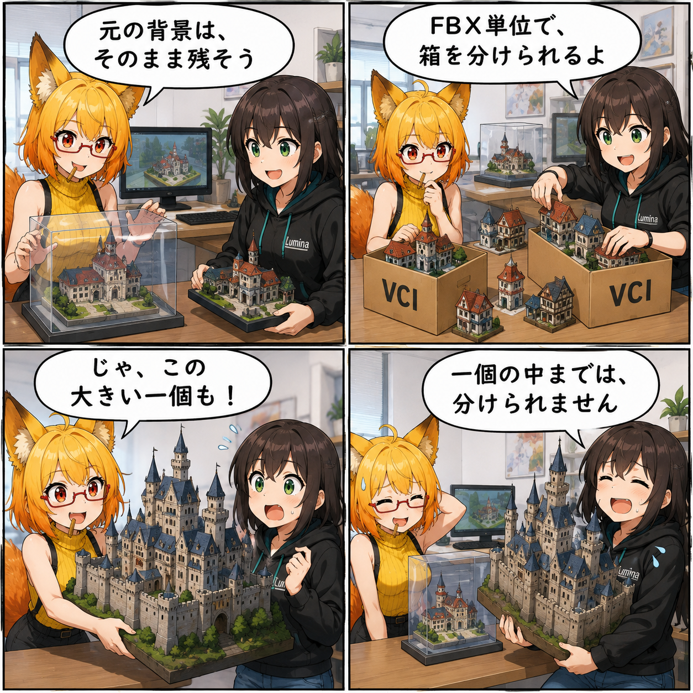

元の背景はそのままに。静的背景VCIビルダーを加えた日
背景の元データを保ちながら、配布用の静的背景VCIを派生生成するUnity Editorツールを追加しました。容量を事前に確認し、必要ならFBX単位で複数のVCIへ振り分けられます。

元の背景を、変換のために変えたくない
背景を組み立てたPrefabは、あとから編集を続けるための正本です。配布形式に合わせるたびに元のマテリアルや画像の読み込み設定まで変わると、元の見た目や作業環境へ影響が出かねません。今回追加した「静的背景VCIビルダー」は、元を保持したまま書き出し用のデータを別に作る構成です。
Prefabから、配布用のVCIへ
入力するのはProject内のPrefabアセットです。シーン上のインスタンスやFBXファイルそのものを直接入力する画面ではありません。解析後、作業用フォルダーへVCI用のMaterial・Prefab・main.luaを生成し、完成した.vciは指定した最終出力先へ書き出します。作者名やバージョン、モデルとスクリプトのライセンスも設定できます。
容量は、箱詰めしてから確かめる
ビルダーは一度VCIへ書き出したデータのサイズを調べ、100,000,000 bytesを超えるか判定します。超過した場合は、FBX単位などのまとまりを複数のグループへ振り分ける案を作れます。各単位の割当は手動でも変更でき、グループごとの事前書き出しで実際のサイズを再確認します。
自動分割案は、必ず上限以内に収まる保証ではありません。分割できる単位がひとつしかなく、それだけで上限を超える場合、FBX単位の振り分けだけでは解決できません。ひとつのメッシュを自動で細切れにしたり、画像を自動圧縮して収める機能としては扱っていません。
技術的なポイント
- 元のPrefab・FBX・Material・TextureImporterへ書き戻さず、派生データを生成する構成です。
- 通常のEditor側エクスポートが画像の読み込み設定を変える経路を避け、RuntimeTextureSerializerを使って画像を読み出します。
- FBX単位に加え、必要に応じてPrefab内の非FBX要素も分割単位として扱います。
- 生成するmainスクリプトにはvci.ResetRootTransform()を組み込みます。
- 100,000,000 bytesちょうどは許容し、それを超えた場合を超過とする判定です。
ほかにも進んだこと・補足
同じコミットには、容量境界、グループ割当、マテリアル変換、mainスクリプトを含む書き出しなどを確認するEditorテストも追加されました。この日記ではコミット済みソースとテスト定義を確認しています。Unityでのテスト実行や、生成した背景の実機表示検証は行っていません。あらゆるシェーダーの見た目が完全に再現されるという保証でもありません。
期間内のコミットはこのビルダーとテストの追加のみです。作業ツリーにある背景制作・照明などの未コミット変更は、今回の完成実績には含めていません。
4コマの裏話
模型を箱へ仕分ける様子で、元を残すこととFBX単位の分割を表しました。小さな模型なら分けられても、大きな一個の中までは分けられない。最後にルミナが抱える城は、ビルダーの対応範囲を示す比喩です。実際に起きた書き出し事故や実測結果を描いたものではありません。
まとめ
静的背景を配布用VCIへ変換する入口が増えました。元の素材を守り、容量を確認し、必要な単位で分ける。背景制作を続けながら、配布用データを用意するためのEditorツールです。
本日のひとこと： 箱を増やしても、大物ひとつは大物のまま。